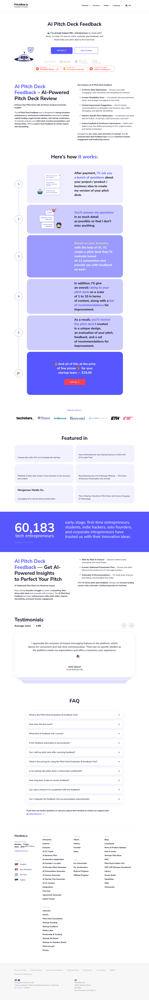
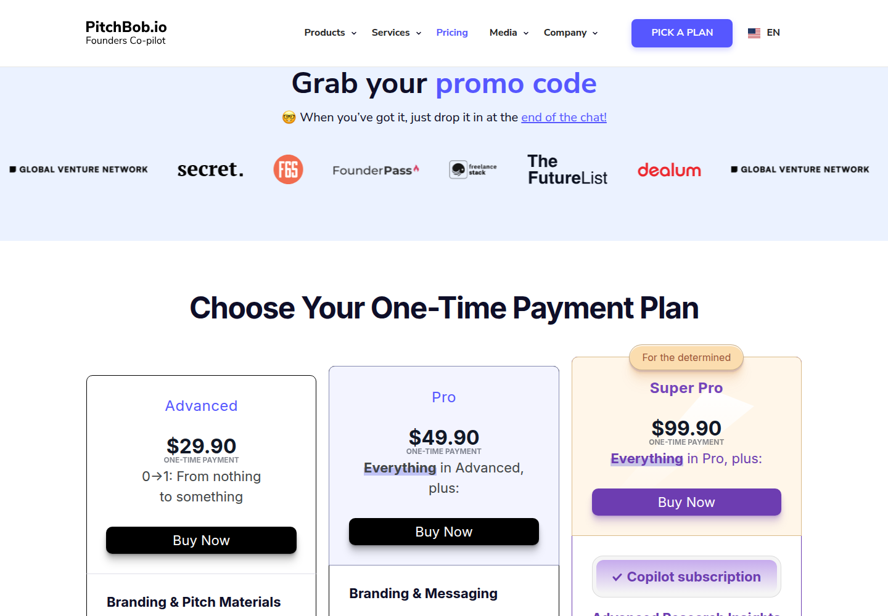

Profile
- Company
- PitchBob
- Url
- https://pitchbob.io/products/ai-pitch-deck-feedback
- Source Category
- AI pitch-deck reviewers
- Research Status
- Deep Cited Research / Draft Complete
- Current Status
- live - fetched https://pitchbob.io/products/ai-pitch-deck-feedback directly on 2026-07-19, HTTP 200; broader pitchbob.io site active with recent blog/history content ('Updated: 8 Sep, 2025').
- Founded Launch Year
- 2016 (idea conceived during a Lean Startup workshop by founder Dima Maslennikov); product evolved to chatbot form during COVID-19 and to a full generative-AI platform in 2023. Source: pitchbob.io/history.
- Company Age
- ~10 years since original concept (2016); ~3 years as current AI-native product (since 2023)
- Hq Country
- Estonia - legal entity 'Disruptive Partners OÜ', Tallinn (Harju maakond, Tallinn, Kesklinna linnaosa, Tornimäe tn 3/5/7, 10145); also a US entity 'PitchBob, Inc' at 2261 Market Street #10281, San Francisco, CA 94114. Additional branch offices in London and Tel Aviv. Source: pitchbob.io footer.
- Operating Area
- global - site localized into en/de/fr/es/ar/pt/ru/tr/it; '60,183 tech entrepreneurs' served across regions
- Target Users
- early-stage founders, first-time entrepreneurs, students, indie hackers, solo founders, corporate intrapreneurs; also serves accelerators, universities, and corporates via White Label/Enterprise products
- Product Category
- cofounder matching (Co-founders board); founder-investor / capital (VC Matching Tool, 100k+ VC database); AI pitch/deck review; AI business plan & pitch deck generation; NDA/e-sign (Agreement Generator)
Product Flows
- Swipe Card Interface
- not found / no evidence of swipe gesture UI; PitchBob's core interaction model is a conversational chatbot ('Bob') via web and WhatsApp/Telegram, not a swipe card UI
- Mutual Match
- not found / no public source
- Ai Matching Scoring
- yes - AI-driven 'VC Matching Tool' surfaces relevant investors from a 100k+ VC database based on startup profile
- Ai Deck Scoring
- yes
- Founder To Founder Flow
- yes - dedicated 'Co-founders board' and 'Job board' let founders find/post for cofounders and team members, the closest equivalent in this batch to BizMatch's Founder<->Founder path, though it is a listing/board model rather than a swipe/NDA-gated match
- Founder To Investor Flow
- yes - 'VC Matching Tool' plus a 'Startups Data Base' / 'TOP-100 Startups' scoreboard and direct application help to '15 top accelerators'; also offers paid 'Startup Scouting' and 'Outreach' services connecting founders to investors/corporates, and an 'Agreement Generator' + 'Equity Tracker' for post-intro paperwork
- Project Profiles
- not found / no distinct 'project' entity type beyond startup profiles in the Startups Data Base
- Messaging Collaboration
- yes - testimonial explicitly cites 'instant messaging features' allowing 'convenient and real-time communication'; product is chat-native (WhatsApp integration mentioned by a reviewer)
- Mobile App
- not found / no App Store/Google Play listing located; accessed via web and messaging platforms (Telegram/WhatsApp) rather than a native app
- Web App
- yes
Security & Documents
- Nda Gated Unlock
- yes - 'Agreement Generator' produces legal documents (implies NDA-type templates as part of the 'investors' pack of 7 documents'), though this is a document-generation tool rather than a gated-unlock-after-signature mechanism like BizMatch's
- Data Room
- not found / no public source
- E Signature
- yes (per original pass; not independently re-confirmed via a dedicated e-sign feature page in this research pass, though 'Agreement Generator' plus deal paperwork tools make this plausible - flagged for manual verification)
- Meeting Prep Ai Briefing
- yes - investor-style deck questions/recommendations
Pricing, Funding & Traction
- Pricing Model
- Paid one-off tool: AI Pitch Deck Feedback priced at $29.90 (beta, Telegram-delivered); broader platform also offers Enterprise/White Label and other paid products (Improve Deck, Business Plan, etc.)
- Business Model
- Mixed: low-cost one-off AI tools (~$29.90) for individual founders, plus B2B Enterprise/White Label licensing to accelerators, universities, and corporates, plus paid services (Pitch Deck Consultants, Scouting, Outreach, Mentorship)
- Total Funding
- not found / no public source (no Crunchbase funding rounds surfaced in search; likely bootstrapped)
- Funding Rounds
- not found / no public source
- Investors
- not found / no public source
- Funding Source Type
- likely bootstrapped / revenue-funded
- Last Funding Date
- not found / no public source
- Users Traction
- 60,183 tech entrepreneurs served (site claim, updated 8 Sep 2025); '35k+ entrepreneurs' cited on the deck-feedback subpage specifically; average testimonial score 4.86
- Deals Funding Facilitated
- not found / no public source
- Partnerships
- For Universities and For Accelerators programs referenced in site navigation; Referral and Affiliate programs; specific named partners not disclosed in scraped content
- Media Coverage
- Cited in press-style mentions: 'L'impact des outils d'IA sur le paysage des startups', 'Revolutionizing the Art of Startups Pitching', 'Mergerous Media Co.' - these read as sponsored/contributed placements rather than major outlet coverage; no TechCrunch/mainstream tech press coverage found
- Product Update Activity
- active - 'News & Product Updates' section in nav; deck-feedback page shows 'Updated: 8 Sep, 2025'; product evolved through three distinct phases (template -> chatbot -> generative AI) through 2023
- Acquisition Rebrand History
- not found / no evidence of acquisition; company legal name is 'Disruptive Partners OÜ' operating the PitchBob brand since 2016
Scores
- Product Overlap Score
- 4
- Feature Maturity Score
- 4
- Market Traction Score
- 3
- Funding Strength Score
- 1
- Ai Depth Score
- 3
- Nda Security Strength Score
- 2
- Network Moat Score
- 3
- Direct Threat Score
- 2.9
- Source Confidence
- High
Evidence Notes
- Primary Sources
- https://pitchbob.io/products/ai-pitch-deck-feedback
https://pitchbob.io/history
https://pitchbob.io/founder - Secondary Sources
- https://www.crunchbase.com/organization/pitchbob-io
https://pitchbob.io/blog/top-370-complete-list-of-active-investors-in-the-eu-uk-for-series-a-startups---download - Unsupported Claims
- '60,183 tech entrepreneurs' and '35k+ entrepreneurs' are self-reported and inconsistent between pages (different pages cite different totals), suggesting rolling/unaudited counters.
- Contradictions
- Deck-feedback subpage says '35k+ entrepreneurs' while broader site footer/blog area says '60,183 tech entrepreneurs' - these are likely measuring different scopes (deck tool users vs. all PitchBob products) but the discrepancy is unresolved.
- Last Checked
- 2026-07-19
- Notes
- Of this batch, PitchBob has the broadest feature footprint closest to BizMatch's Three-Paths model: it has an actual Co-founders board (Founder<->Founder equivalent), a VC Matching Tool + accelerator application help (Founder<->Investor equivalent), and document/equity tooling. Still lacks a true swipe UI, NDA-gated unlock, or data room in the BizMatch sense - its model is board/listing + chatbot-driven, not swipe-and-match.
Registration Flow
Research date: 2026-07-19. Screenshots are sanitized public copies from the private registration-flow capture set; credentials, tokens, verification links/codes, browser chrome, and private identifiers are not intentionally published.
Outcome: stopped at required truthful-details / submission boundary.
Stop point: Official Choose Your One-Time Payment Plan section at https://pitchbob.io/#pricing, before clicking Buy Now, opening Stripe checkout, entering credentials, creating an account, requesting email verification, uploading a pitch deck, beginning the paid questionnaire, or making any financial commitment
Blocker / boundary: PitchBob's official AI Pitch Deck Feedback CTA leads directly to paid one-time plans. The product workflow itself states that questioning begins after payment, and the pricing section's Buy Now actions point to Stripe checkout. Paid plan, payment, and financial commitment are mandatory stop conditions, so no checkout or registration path was opened.
- Official AI Pitch Deck Feedback product page. PitchBob's official product page describes an AI pitch-deck review workflow and exposes a 'Let’s go' action. The published workflow says the questioning begins 'After payment' and advertises the output at $29.90.
- One-time payment plan stop point. The product-page 'Let’s go' action routes to the official homepage pricing anchor rather than a free registration form. The visible section is titled 'Choose Your One-Time Payment Plan' and offers Advanced ($29.90), Pro ($49.90), and Super Pro ($99.90) with Buy Now actions. Capture stopped without opening any Buy Now or Stripe checkout link.

